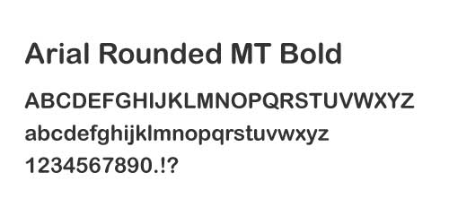
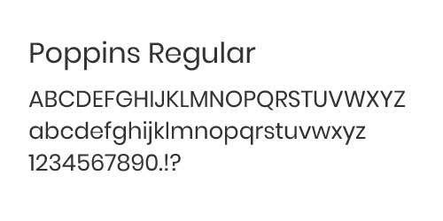
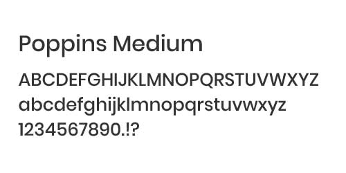
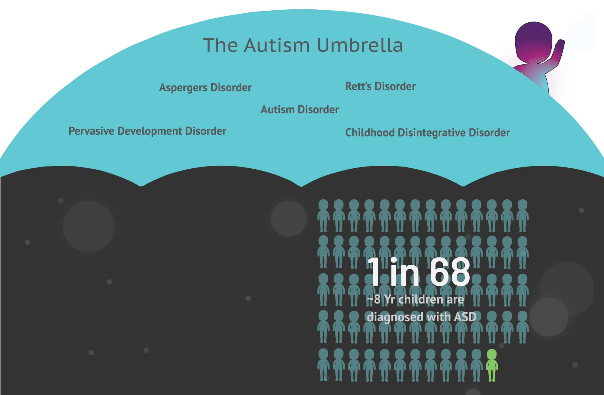
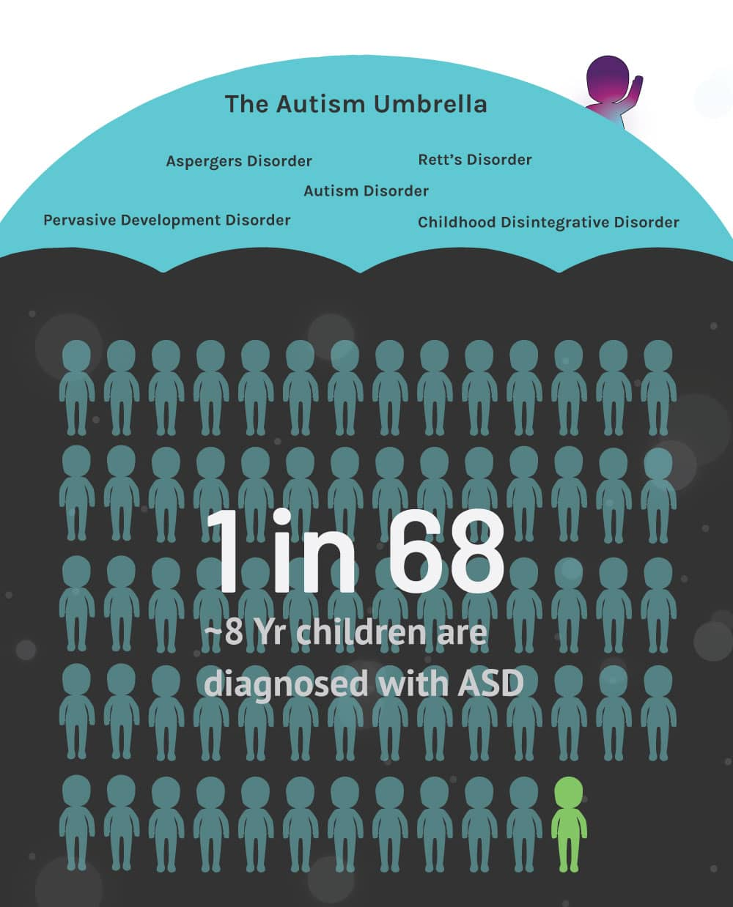
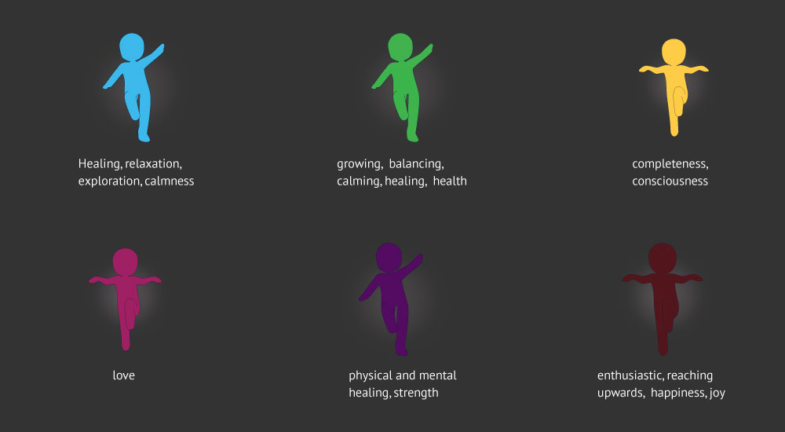
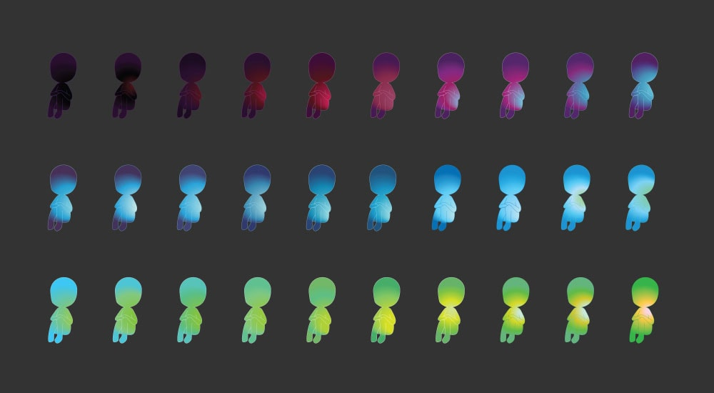
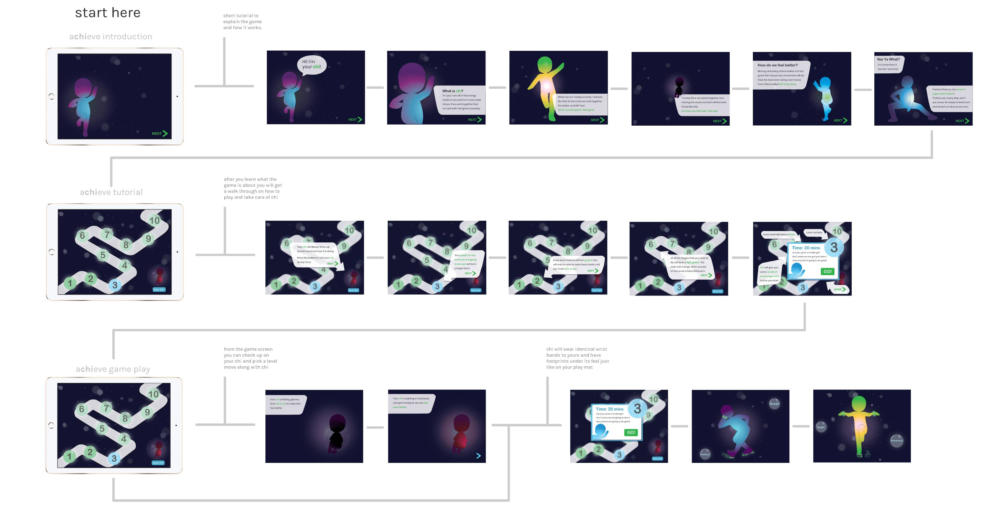

Overview
aCHIeve uses the art of Nei Yang Gong to teach children with Autism the ability to control their mental and physical state with the use of slow and controlled movements to strengthen their Chi.
Problem
Most apps for autism focus on speech and social skills but fail to take into account the physical state of children with Autism.
Solution
This unorthodox workout app focuses on the physical and mental state of a child with autism. While learning how to control their movements, the child will also learn about body awareness, following direction, and calming breathes.
Typography
The selected typefaces were chosen for the purpose of matching the circular designs of the entire app while maintaining readability.
  ASD (Autism Spectrum Disorder) is a complex developmental brain-based disability that is characterized by challenges with communications and social behaviors. Autism is known as an umbrella disorder and comes in a spectrum of classifications.
Because there are so many symptoms to Autism as well as many variations, no two children have the exact same symptoms.
 ASD (Autism Spectrum Disorder) is a complex developmental brain-based disability that is characterized by challenges with communications and social behaviors. Autism is known as an umbrella disorder and comes in a spectrum of classifications.
Because there are so many symptoms to Autism as well as many variations, no two children have the exact same symptoms.
Competition
Many apps are offered for Children with Autism, however, a majority of these apps deal with social skills and behavior over physical activity.
Data from 13 researched iPhone and iPad applications.
Hello Jacob
Jacob is 8 years old and was diagnosed with Autism Spectrum Disorder when he was 3 years old. He is vocal but has trouble with basic motor functions and following directions as well as suffers from drastic mood swings and seizures.
Game Play
The Equipment
In order for the aCHIeve app to track movements, user will have to purchase the iPad cradle, a set of wrist bands, and a play mat. The mat allows up to 2 players to improve their Chi at a time. Connecting your device is quick and easy with no extra programs required.
- Step 1: Connect the aCHIeve cradle to any television or monitor with a standard HDMI cable
- Step 2: Start the aCHIeve app and place the device into the cradle
- Step 3: Put on the wrist bands and step onto the play mat to start game play with Chi
Apple's Smart Connector is utilized to eliminate the use of cords and makes it easy for a user of any age to start up their own adventure with Chi.
The wrist bands and play mat come pre-connected to your cradle, if there are any connection issues or if you purchase another set of wrist bands. Simply press the button on the bands and they will sync to the nearest aCHIeve cradle automatically.
Invision App Mockup
Check out the aCHIeve app for yourself! You will go through the walkthrough on how the app works and learn about your Chi as well as get to meet your Chi, see game map and game play.
Nei Yang Gong
Nei Yang Gone is an ancient Chinese practice that consists of still and slow moving meditative poses. Each gentle movement directs the flow of the life force known as Chi into and through the body.
Chi becomes outf balance when strains are put onto the body or mind and using Nei Yang Gong is used to restore this balance. The practice is used in China as a preventative medicine and promotes self-healing in the forms of: health, relaxation, calming the mind and increasing overall well-being.
Thought Behind the Color
Energy
Because Chi is an energy that flows into and through the body, color gradients were chosen rather than solid colors in order to evoke an emotional response.
Colors chosen to use throughout the design are based on Chinese culture and their beliefs in each color. Chi is represented in a human form so that children can relate to it and see it as themselves. When their chi is sad it will show as a dark color and when Chi is feeling great it will be brighter and happier tones. As a workout session progresses the colors will shift, glow and change to represent the good feelings they will feel when they follow all of the motions.
 See the Walkthrough
The video below will walk you through the start of the game and introduce you to your Chi.
Full App
App Flow
Click to see a large version of the user flow for achieve.
{kind=link}